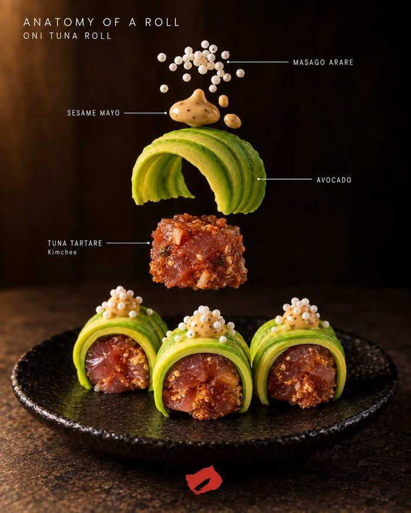
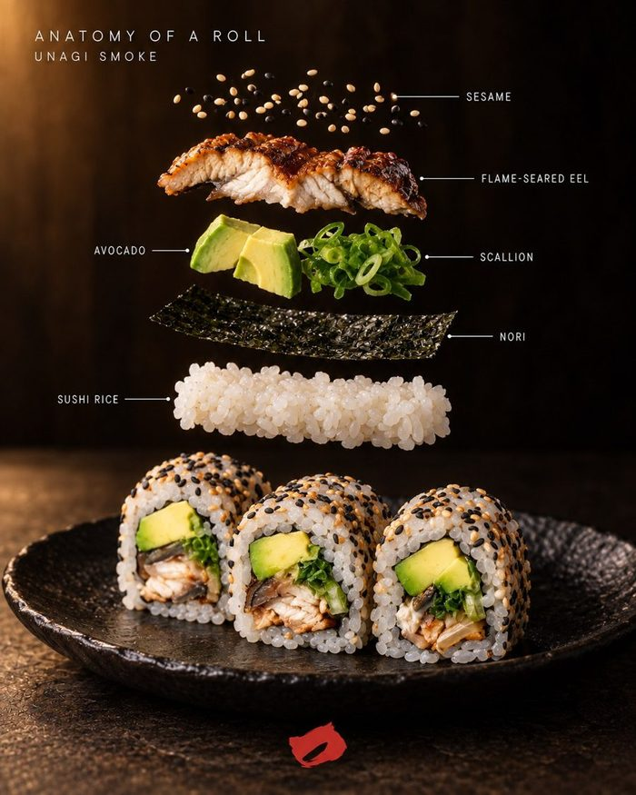
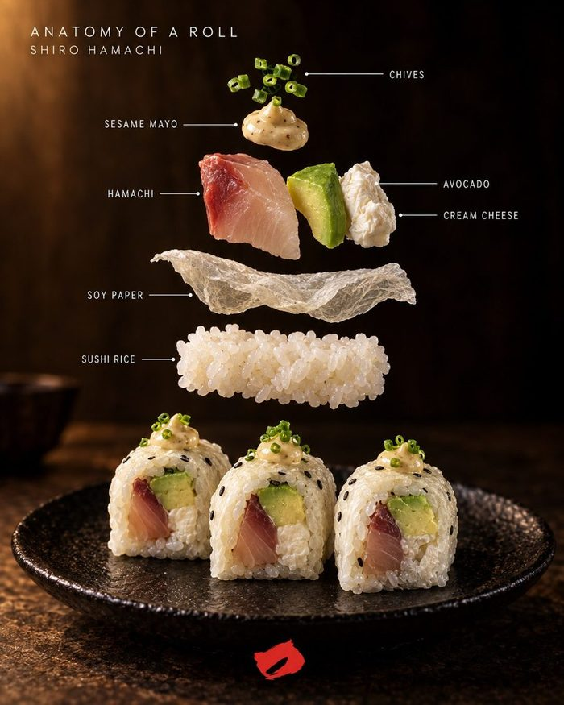
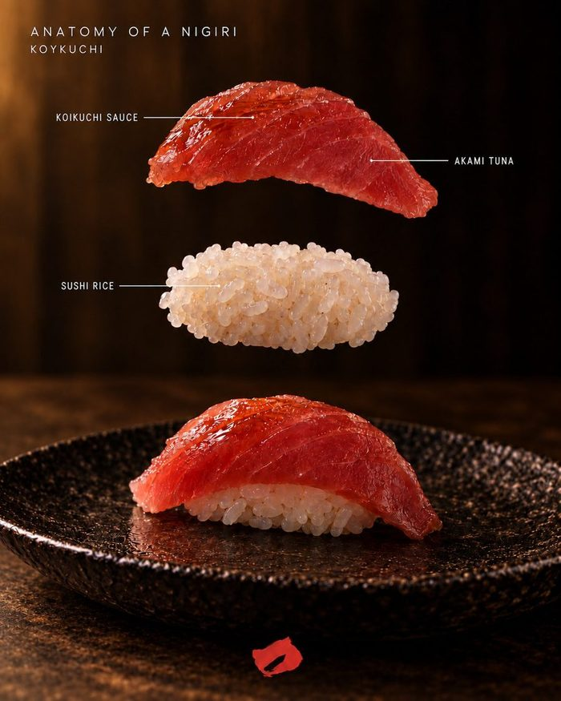
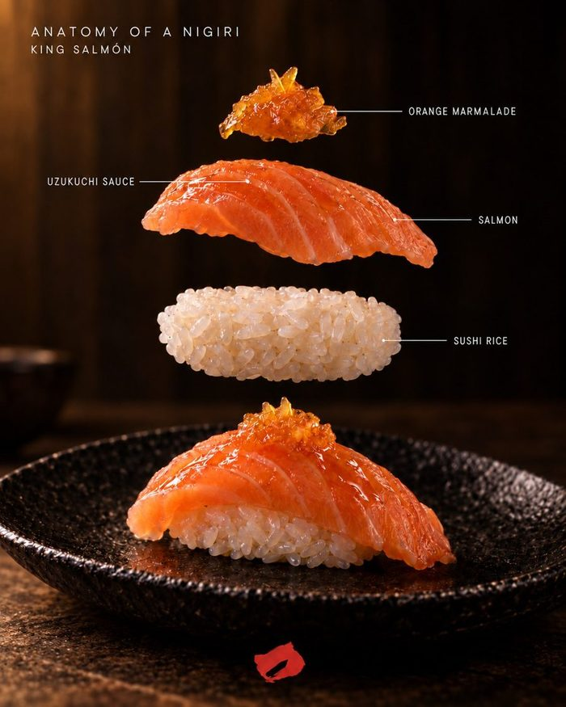
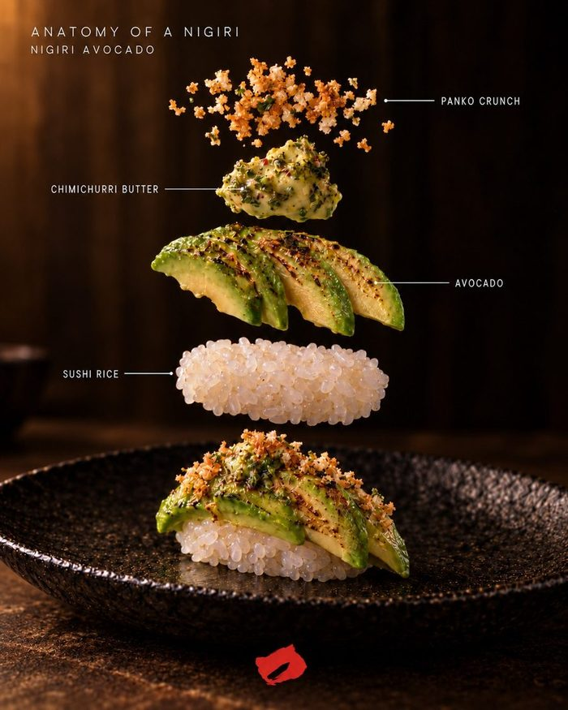
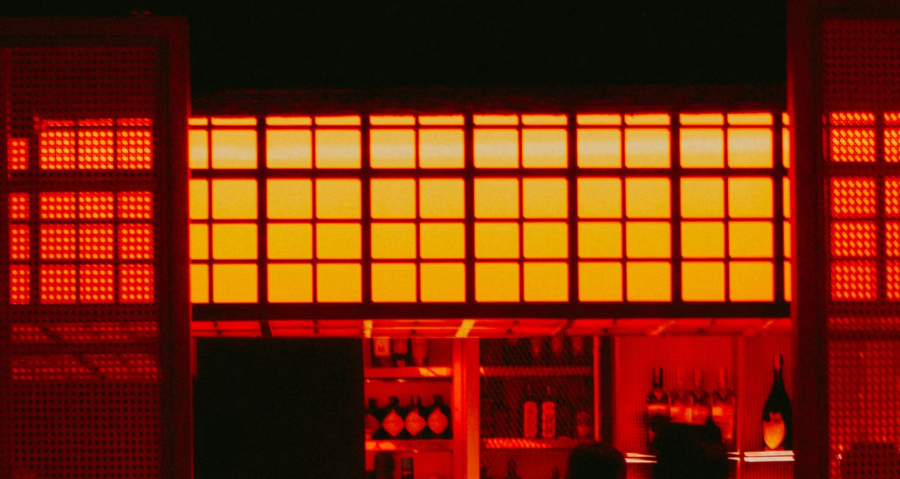
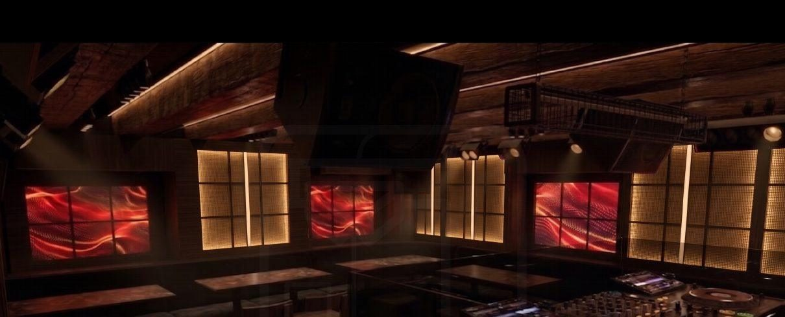
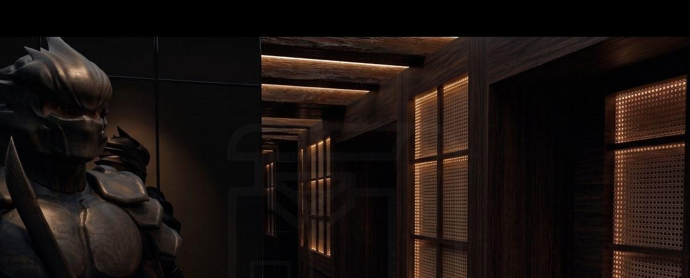
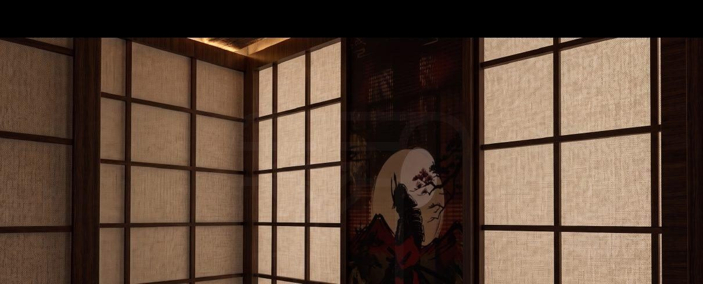

La cenaDinner
Luz baja y precisión japonesa. Hosomaki, nigiri y cócteles para empezar la noche.Low light and Japanese precision. Hosomaki, nigiri and cocktails to start the night.
Hosomaki Bar · Bogotá
Gastronomía, cócteles, música y atmósfera en un mismo ritual.Gastronomy, cocktails, music and atmosphere in one ritual.
Entra a ONO, donde la gastronomía, los cócteles, la música y la atmósfera se funden en un solo ritual. De cenas íntimas inspiradas en la precisión japonesa a noches que se convierten en una experiencia vibrante, cada detalle está pensado para despertar los sentidos. Un espacio donde la energía cambia con la noche, la música marca el ánimo y cada visita se vuelve parte de una historia que vale la pena repetir.Step into ONO, where gastronomy, cocktails, music and atmosphere merge into one ritual. From intimate dinners inspired by Japanese precision to nights that evolve into a vibrant experience, every detail is designed to awaken the senses. Discover a space where the energy shifts with the night, the music guides the mood, and every visit becomes part of a story worth repeating.

ONO nació de la idea de que una noche fuera debe sentirse como una experiencia sensorial completa. Un espacio escondido en Bogotá donde la gastronomía, los cócteles, la música y la atmósfera se juntan en constante evolución.ONO was born from the idea that a night out should feel like a complete sensory experience. A hidden space in Bogotá where gastronomy, cocktails, music and atmosphere come together in constant evolution.
Inspirado en el ritual, la cultura y la conexión, ONO se transforma con la energía de la noche: cada detalle es intencional y cada experiencia se vive distinta.Inspired by ritual, culture and connection, ONO transforms with the energy of the night, where every detail is intentional and every experience unfolds differently.
Martes a sábado: 7 pm >>> 3 amTuesday to Saturday: 7 pm >>> 3 amCalle 84A No. 9-11+25
La noche en tres actosThe night in three acts
Llegas a cenar y te quedas a otra cosa. El mismo lugar, tres temperaturas.You come for dinner and stay for something else. One room, three temperatures.
Luz baja y precisión japonesa. Hosomaki, nigiri y cócteles para empezar la noche.Low light and Japanese precision. Hosomaki, nigiri and cocktails to start the night.
Las luces bajan, sube la música y el bar se vuelve fiesta.The lights drop, the music rises and the bar turns into a party.
Una historia que vale la pena repetir.A story worth repeating.
El menúThe menu
Arroz, nori y un protagonista. El hosomaki es el roll más sencillo del sushi y por eso no perdona: todo está en el pescado, el corte y el arroz.Rice, nori and one star. Hosomaki is sushi's simplest roll, so it forgives nothing: it's all in the fish, the cut and the rice.
Salmón y atún envueltos en papel de soya, con aguacate y crunch de panko. Encima, mayonesa de ajonjolí y mantequilla de trufa.Salmon and tuna wrapped in soy paper, with avocado and panko crunch. On top, sesame mayo and truffle butter.
Salmón · Atún · TrufaSalmon · Tuna · Truffle
Atún picado, hamachi y salmón en láminas finas, queso crema y cebolla larga. Terminado con salsa de anguila de la casa.Chopped tuna, thinly sliced hamachi and salmon, cream cheese and spring onion. Finished with our house eel sauce.
Atún · Hamachi · SalmónTuna · Hamachi · Salmon
Un bocado de arroz, salmón fresco y mantequilla de trufa que se flambea frente a ti.One bite of rice, fresh salmon and truffle butter, flamed in front of you.
Salmón · Trufa · FuegoSalmon · Truffle · Fire
Capa por capa · desliza →Layer by layer · swipe →








A partir de las 11 pm ONO cambia de piel. Mesas, botella y pista: reserva tu noche.From 11 pm ONO sheds its skin. Tables, bottles and the dance floor: book your night.
Reservar fiestaParty reservationsMáscaras, grabados y peces tatuados: el universo visual de ONO.Masks, engravings and tattooed fish: the visual world of ONO.
PrensaPress
¿Periodista o creador de contenido?Journalist or content creator? EscríbenosGet in touch
Blog
CocinaFood ·
Su origen en Edo, sus leyendas y en qué se diferencia del uramaki y el futomaki.Its Edo origins, its legends and how it differs from uramaki and futomaki.
SushiSushi ·La barra, el omakase de cada mes y ONO llegando a Cartagena.The bar, the monthly omakase and ONO arriving in Cartagena.
MúsicaMusic ·Donde el ritual se encuentra con el deseo: la playlist de ONO en Spotify.Where ritual meets desire: the ONO playlist on Spotify.
ONO Cartagena
ONO abre su segunda casa dentro de Casa Salvaje, en Cartagena. Paneles shoji, vigas de madera, luz roja y un samurái en la entrada.ONO opens its second home inside Casa Salvaje, Cartagena. Shoji screens, timber beams, red light and a samurai at the door.
Apertura · nov – dic 2026Opening · Nov – Dec 2026

